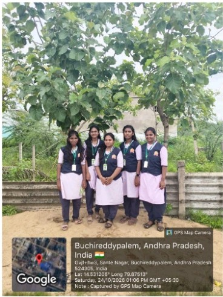
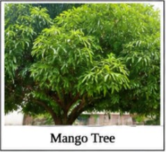
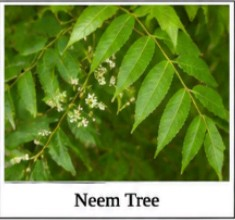
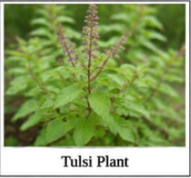
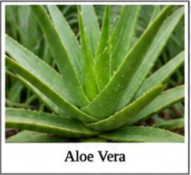
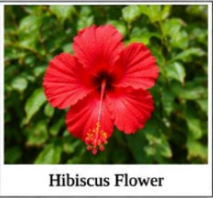
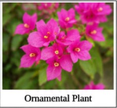
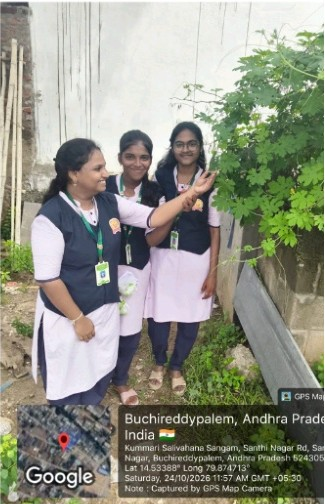
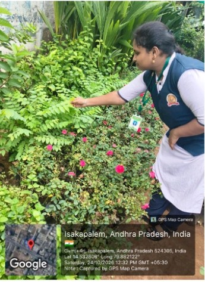
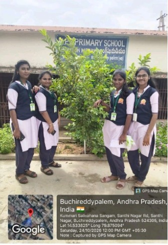

🌱
Identify local flora
Observe and document common trees, shrubs, herbs, climbers and flowering plants in the selected locality.
A community-based botanical survey documenting the diversity, uses and ecological importance of plants in Buchireddypalem, Nellore District.
Explore ProjectView GalleryThe Botanical Survey was conducted to study and document the diversity of plant species within the selected area. The survey focused on identifying and recording native as well as introduced plant species, while assessing their ecological role and potential contributions to local environmental issues.
The team observed trees, shrubs, herbs, medicinal plants, ornamental plants and other vegetation in gardens, open lands, roadsides and community spaces. Photographs and field notes were collected, and local knowledge about plant uses was documented.

The survey connected plant identification with community knowledge and environmental awareness.
Observe and document common trees, shrubs, herbs, climbers and flowering plants in the selected locality.
Capture photographs, prepare field notes and compile a record of the species observed during the survey.
Learn about medicinal, food, cultural and other uses of plants through interaction with local people.
Recognize the ecological importance of plants and the role of vegetation in supporting local biodiversity.
Discuss traditional plant knowledge and encourage awareness of plant protection and conservation.
Highlight threats such as invasive species and habitat degradation and encourage sustainable practices.
Department of Computer Science and Engineering · Sree Venkateswara College of Engineering
Faculty Guide: SD. AKHTAR BHASHA M.Tech.
Weekly activity themes are based on the consolidated activity log in the submitted program book.
Identified common trees, medicinal plants and ornamental plants; photographed specimens, prepared field notes and discussed plant uses with community members.
Surveyed agricultural lands, crop-related plants, weeds and aquatic plants such as lotus and water hyacinth; recorded seasonal vegetation and spoke with farmers.
Observed hardy shrubs and wild plants, documented medicinal plants including amla and aloe vera, and noted invasive species in open and degraded areas.
Surveyed temple surroundings, school gardens and public spaces; documented sacred trees, flowering plants and community awareness activities.
Studied roadside and wasteland vegetation, identified common weeds such as Parthenium and Cynodon, and recorded hardy and underutilized plants.
Recorded additional varieties of trees, shrubs and herbs; observed growth conditions, watering needs, plant threats and community participation in plant care.
The consolidated activity log records learning the required web technologies and designing a Smart Garden Monitoring and Automation System dashboard.
The activity log records implementing a website dashboard to display garden readings, demonstrating manual and automatic irrigation control, testing and documenting the work.
Selected plant photographs and field-survey moments included in the project report.








